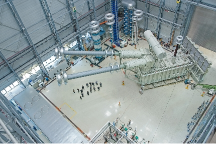

中低压配电
全球首台±1100千伏高压直流变压器通过试验2018-10-12
西门子为全球最高电压传输等级——±1100千伏高压直流（HVDC）输电系统研发和制造了全球首台±1100kV高压直流换流变压器，并于近日通过型式试验。西门子位于德国纽伦堡的变压器厂完成了该高压直流变压器的研发、制造和测试。西门子及其合作伙伴将为全球规模最大的高压直流输电系统提供7台±1100kV高压直流换流变压器，这是其中的第一台。该类型变压器是目前全球最强大的单相变压装置之一，输电容量达587.1兆伏安。西门子依托以德国纽伦堡变压器厂为首的生产网络，携手西门子广州高压直流变压器工厂及一家中国合作伙伴，合作完成这些变压器的生产制造。以上工厂均按照纽伦堡工厂的要求和说明文件进行生产。世界上规模最大的高压直流输电线路将和变压器一起，于2018年进行调试。
“西门子成功测试全球首台输电电压为±1100千伏的高压直流变压器，在直流输电领域树立了新标杆。”西门子能源管理集团变压器部首席执行官Breatrix Natter表示，“西门子丰富的经验和勇于创新的精神使得我们实现新的突破。输电电压越高，输电损耗就越低，因此新变压器可以帮助客户更加高效地完成长距离直流输电。”
该变压器将安装于新疆昌吉到安徽古泉高压直流输电线路上的古泉换流站。该项目是世界上最强大的高压直流传输系统，其输电容量、电压和线路长度为世界之最。它将在全球首次以±1100千伏电压等级进行直流输电。这条高压直流输电线路长达3284公里，将把来自西北地区新疆的电力输送到东部的安徽省。该输电系统的输电容量达12吉瓦，将取代此前10吉瓦输电容量的系统，跃居最强大的输电系统。在这些系统中，变压器把电力从传统交流电网送入换流站。换流站在发输端换流为直流电，在接收端逆变为交流电。由于变压器连接了换流阀，变压器将需承受超高的直流电压及超大的直流电流。
基于在高压直流变压器领域拥有的多年经验，西门子研发出了该类型变压器所需的所有关键部件，在高压直流输电技术领域达到了新的高度。由于该变压器的体积庞大（长x宽x高：37.5米x12.0米x14.5米），其生产和测试过程中遇到诸多挑战。然而，此±1100千伏的原型产品通过了在功能、排放和负载方面的所有测试。通过型式试验的该高压直流变压器正在准备通过陆路、铁路和海上长距离运输运往中国。